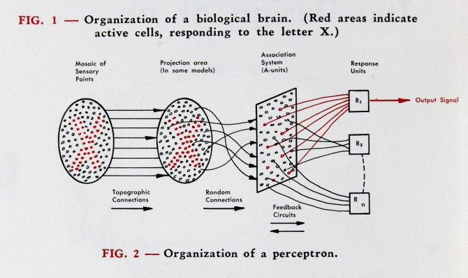

Introduction to Deep Learning (DL)
This notebook is intented to give a brief overview over the field of DL.
What is DL?
A deep neural network is a neural network with many layers -> allowing it to learn hierarchical representations of data.
The output of each layer is a nonlinear transformation of the weighted sum of the inputs.
Mathematically, we can represent the output of a layer l with \(n_l\) neurons as:
\(h_l = g(W_l h_{l-1} + b_l)\)
where \(h_{l-1}\) is the output of the previous layer, \(W_l\) is the weight matrix connecting the neurons of layer \(l-1\) to layer \(l\), \(b_l\) is the bias vector for layer \(l\), and \(g\) is a nonlinear activation function.
The training process involves feeding the network a large amount of labeled data and adjusting the network’s parameters to minimize a loss function that measures the difference between the predicted outputs and the true outputs. This is typically done using gradient-based optimization algorithms, such as stochastic gradient descent. Mathematically, we can express the loss function L as:
\(L = 1/N \sum_{i=1}^N L_i(y_i, f(x_i; \theta))\)
where N is the number of training samples, \(x_i\) and \(y_i\) are the input and output of the i-th sample, \(f(x_i; \theta)\) is the output of the neural network with parameters \(\theta\), and \(L_i\) is a per-sample loss function, such as the mean squared error (MSE) or the cross-entropy loss.
Backpropagation:
* Once the loss has been computed, the next step is to update the parameters of the model (i.e., the weights and biases) to reduce the loss on the training data. Backpropagation is an algorithm used to compute the gradients of the loss with respect to the model parameters.
- By repeating the process of computing the loss and backpropagating the gradients, the neural network gradually learns to make more accurate predictions on the training data. The goal of training is to find the set of parameters that minimizes the loss on the training data while still generalizing well to new, unseen data.
Brief historical overview
1940s 50s- From formulation to implementation
- DL history dates back 1943 to Warren McCulloch and Walter Pitts
- Mathematical representation of neurons in the brain might work
- Given the input x = [ x₁, x₂, x₃, …, xₙ ]ᵀ, the inhibitory input i and the threshold Θ, the output y is computed as follows:
- Marvin Minsky and Dean Edmonds developed the first neural network computer, called the SNARC (The Stochastic Neural Analog Reinforcement Calculator); designed of tasks like desicion making with human feedback (i.e. navigating through a maze)
- Frank Rosenblatt developed the perceptron and simple optimization algorithm

Brief description of learning algorithm
- Assume that the mᵗʰ example xₘ belongs to class yₘ=0 and that the perceptron correctly predicts ŷₘ =0. In this case, the weight correction is given by Δw = ( 0-0 ) xₘ, i.e. we do not change the weights. The same applies to bias.
- Similarly, if the mᵗʰ example xₘ belongs to class yₘ=1 and the perceptron correctly predicts ŷₘ =1, then the weight correction is Δw = 0. The same applies again for the bias.
- Assume now that the mᵗʰ example xₘ belongs to class yₘ=0 and that the perceptron wrongly predicts ŷₘ =1. In this case, the weight correction is given by Δw = ( 0–1 ) xₘ = –xₘ, while the bias is updated as b = b–1.
- Finally, if the mᵗʰ example xₘ belongs to class yₘ=1 and the perceptron wrongly predicts ŷₘ =0, the weight correction is Δw = xₘ. The bias is also updated according to b = b+1
(See also Learning algorithm)
“Stories about the creation of machines having human qualities have long been a fascinating province in the realm of science fiction,” Rosenblatt wrote in 1958. “Yet we are about to witness the birth of such a machine – a machine capable of perceiving, recognizing and identifying its surroundings without any human training or control.”
1960s - AI winter
- Due to limitations of early networks, different research directions in AI become more popular, e.g. Knowledge-Bases and Rule-based systems
1970s - 1990s - Incremental Progress
- Computing power still limited but slow incremental progression
- Developement of Backpropagation algorithm (Optimization algorithm)
- Conceptualization of architecture like CNN, RNN, LSTM
2000s - From the Vanishing Gradients to ImageNet
- The “Vanishing Gradient Problem” made it difficult to train models with many layers
- First techniques were developed to address the issue, i.e. using activation functions
- 2009: ImageNet competition
Machine Learning (ML)/ DL Paradigm
There are three main types of machine learning: supervised learning, unsupervised learning, and reinforcement learning.
In supervised learning, the algorithm is trained on a set of input-output pairs, and the goal is to learn a function that maps inputs to outputs.
In unsupervised learning, the algorithm is trained on a set of input data without any labels, and the goal is to learn the underlying structure or patterns in the data.
In reinforcement learning, the algorithm learns to make decisions by interacting with an environment and receiving feedback in the form of rewards or punishments.
Domains
- Computer Vision: Neural networks are widely used for tasks such as object detection, image segmentation, and image classification.
- Self-driving cars
- Facial recognition
- Medical image analysis
- Natural Language Processing (NLP): Neural networks can be used for tasks such as sentiment analysis, language translation, and speech recognition.
- Chatbots
- Virtual assistants
- Language translation services.
- Robotics: Neural networks are used in robotics for tasks such as object detection and grasping, path planning, and motion control.
- Industrial automation
- Autonomous drones
- Humanoid robots
- Gaming: Neural networks can be used to build intelligent game agents that can learn to play games such as chess, Go, and video games.
- Finance: Neural networks can be used for tasks such as fraud detection, risk assessment, and portfolio optimization.
- Fraud detection systems
- Credit scoring models
- Trading algorithms.
- Healthcare: Neural networks are used for tasks such as disease diagnosis, drug discovery, and personalized medicine.
- Medical imaging analysis
- Clinical decision support systems
- Drug discovery pipelines
- Marketing: Neural networks can be used for tasks such as customer segmentation, recommendation systems, and predictive modeling.
- Targeted advertising
- Customer retention
- Product recommendations
The Concept of Embeddings
Embedding” is a general term used in machine learning and refers to the process of mapping a high-dimensional, discrete or categorical input into a continuous, low-dimensional vector space (embedding space) where similar inputs are close to each other. In neural networks, embeddings are often learned in an unsupervised manner, meaning that the embedding space is learned from the data itself, without the need for explicit supervision.
Embeddings are widely used in natural language processing (NLP) and graph neural networks (GNNs), among other areas. Here are some specific examples:
NLP: In NLP, embeddings are often used to represent words or phrases as vectors in a continuous space, which can capture semantic and syntactic similarities between words. Word embeddings are typically learned by training a neural network to predict a word from its context (i.e., neighboring words), using a technique called Word2Vec. Once learned, these embeddings can be used as input features for downstream NLP tasks, such as sentiment analysis or named entity recognition.
GNNs: In GNNs, embeddings are used to represent nodes or edges in a graph as vectors in a continuous space, which can capture the structural similarities and relationships between them. Graph embeddings are typically learned by training a neural network to predict the presence or absence of edges between nodes in a graph, using techniques such as graph convolutional networks (GCNs) or graph attention networks (GATs). Once learned, these embeddings can be used as input features for downstream GNN tasks, such as node classification or link prediction.Overall, embeddings are a powerful tool for reducing the dimensionality of high-dimensional inputs and capturing their inherent structure and relationships. They have been used successfully in a wide range of machine learning applications, particularly in NLP and GNNs.
Models/Architectures and Applications
- Convolutional Neural Networks (CNNs): CNNs are a type of neural network that is used for image classification, object detection, and other computer vision tasks. They are designed to process data that has a grid-like structure, such as images, and use convolutional layers to extract features from the input. The input to a CNN is a tensor of shape (width, height, channels), where channels correspond to the color channels of the image (e.g. red, green, blue).
- Recurrent Neural Networks (RNNs): RNNs are a type of neural network that is used for sequential data, such as time series data or natural language processing. They use recurrent layers to maintain a memory of previous inputs, which allows them to model temporal dependencies in the data. The input to an RNN is a sequence of vectors, where each vector corresponds to a timestep in the sequence.
- Long Short-Term Memory (LSTM) Networks: LSTMs are a type of RNN that is specifically designed to handle long-term dependencies in the input data. They use a special type of recurrent layer that can selectively remember or forget previous inputs. They have often been used for natural language processing tasks such as language modeling or machine translation.
- Generative Adversarial Networks (GANs): GANs are a type of neural network that is used for generative tasks, such as image synthesis and text generation. They consist of two neural networks that are trained in a game-like setting, with one network generating fake data and the other network trying to distinguish between real and fake data.
- Autoencoders: Autoencoders are a type of neural network that is used for unsupervised learning and dimensionality reduction. They are designed to encode the input data into a lower-dimensional representation and then decode it back into the original form, with the goal of minimizing the reconstruction error.

- Seq2Seq models: Translation tasks/sentiment analysis

- Transformers: Transformers are a type of neural network that is used for natural language processing tasks, such as language translation and text summarization. They use self-attention mechanisms to process input sequences and can model long-range dependencies in the data.

- Graph neural networks: Generalization the convolution operator from CNNs, to aggregate information over nodes and edges.
- Diffusion Networks: The modern diffusion networks used in deep dream are a type of generative model that leverages the power of the diffusion process to generate images by gradually diffusing noise into the network and mapping it to a target distribution.

The Importance of Frameworks
Deep learning frameworks provide a powerful set of tools for building, training, and deploying deep neural networks, which have shown exceptional performance on a wide range of tasks. * Quick prototyping, easy experimental setup, availability of proven architecture, hyperparameter, data pipelines * High level abstraction of underlying computation, enable possibility of complex models, no need to worry about memory management * Open-source and activily maintained * Hardware-support (GPUs, TPU, …) * Standardized interface for pretained, state-of-the-art models (see transfer learning)
Mostpopular frameworks include (Google-developed Tensorflow or) Facebooks Pytorch
Active Research Areas beyond the Model
Optimization techniques: Developing more efficient and effective optimization algorithms to train deep neural networks.
Interpretability and explainability: Understanding and interpreting the decisions made by deep learning models, and making them more transparent and interpretable.
Transfer learning: Investigating ways to transfer knowledge from one task or domain to another, allowing deep learning models to be trained with less data and time.
Adversarial attacks and defenses: Studying how deep learning models can be attacked or fooled, and developing defenses against such attacks.
Uncertainty estimation: Developing techniques to estimate the uncertainty of deep learning models, which is important for applications such as autonomous driving and medical diagnosis.
Reinforcement learning: Developing deep learning models that can learn from trial and error, and apply this knowledge to make decisions in complex environments.
Federated learning: Investigating techniques for training deep learning models on decentralized data, allowing for better privacy and security.
Hardware and software acceleration: Developing specialized hardware and software for deep learning, to improve performance and efficiency.
Multi-task learning: Studying ways to train deep learning models to perform multiple tasks simultaneously, improving overall efficiency and accuracy.
Meta-learning: Developing algorithms that can learn how to learn, enabling more efficient and effective learning on new tasks.
Continual learning: Investigating techniques for deep learning models to learn continuously over time, without forgetting previous knowledge.
Domain adaptation: Developing methods for adapting deep learning models trained on one domain to perform well on a different domain.
Attention mechanisms: Exploring attention-based models that focus on important parts of the input, allowing for better performance on complex tasks.
Graph neural networks: Developing deep learning models that can operate on graph-structured data, such as social networks or chemical compounds.
Active learning: Investigating methods for training deep learning models with the most informative data samples, allowing for more efficient use of resources.
Generative models: Studying deep learning models that can generate new data samples, such as images, audio, or text.
Few-shot learning: Developing deep learning models that can learn from just a few examples, enabling faster adaptation to new tasks or domains.
Large-scale deployment: Investigating techniques for deploying deep learning models at scale, in order to serve millions or billions of users with high performance and reliability.
…
Implementation (Overview)
Data collection: The first step is to gather the data that will be used to train the machine learning algorithm.
Data preprocessing: The collected data needs to be cleaned, transformed, and prepared for the machine learning algorithm. This step includes tasks such as removing irrelevant or redundant data, handling missing values, and scaling the features.
Model selection: The next step is to select a machine learning model that is appropriate for the task at hand.
Model training: In this step, the selected machine learning model is trained on the preprocessed data. The goal is to find the optimal parameters that minimize the error between the predicted outputs and the actual outputs.
Model evaluation: Once the machine learning model is trained, it needs to be evaluated to measure its performance on new, unseen data.
Model application: Finally, the machine learning model can be deployed in a real-world environment where it can be used to make predictions or decisions.
Implementation (Technical level)
import torch
import torch.nn as nn
import torch.optim as optim
import torchvision.transforms as transforms
import torchvision.datasets as datasets
# Set random seed for reproducibility
torch.manual_seed(0)
# Define some parameters
batch_size = 32
num_workers = 4
lr = 0.001
num_epochs = 10# Define data transforms
data_transforms = transforms.Compose([
transforms.Resize(256),
transforms.CenterCrop(224),
transforms.ToTensor(),
transforms.Normalize(mean=[0.485, 0.456, 0.406], std=[0.229, 0.224, 0.225])
])# Load ImageNet dataset
train_dataset = datasets.ImageFolder('/path/to/imagenet/train', transform=data_transforms)
val_dataset = datasets.ImageFolder('/path/to/imagenet/val', transform=data_transforms)
# Create data loaders
train_loader = torch.utils.data.DataLoader(train_dataset, batch_size=batch_size, shuffle=True, num_workers=num_workers)
val_loader = torch.utils.data.DataLoader(val_dataset, batch_size=batch_size, shuffle=False, num_workers=num_workers)# Load pre-trained ResNet-18 model
model = torch.hub.load('pytorch/vision:v0.9.0', 'resnet18', pretrained=True)
# Freeze all layers except the final classifier
for param in model.parameters():
param.requires_grad = False
model.fc.requires_grad = True
# Replace final classifier with our own
model.fc = nn.Linear(512, 1000)# Define loss function and optimizer
criterion = nn.CrossEntropyLoss()
optimizer = optim.SGD(model.fc.parameters(), lr=lr, momentum=0.9)# Train model
for epoch in range(num_epochs):
train_loss = 0.0
train_acc = 0.0
val_loss = 0.0
val_acc = 0.0
# Train on training set
model.train()
for i, (images, labels) in enumerate(train_loader):
optimizer.zero_grad()
outputs = model(images)
loss = criterion(outputs, labels)
loss.backward()
optimizer.step()
# Compute training accuracy
_, preds = torch.max(outputs, 1)
train_acc += torch.sum(preds == labels.data)
train_loss += loss.item() * images.size(0)
train_loss /= len(train_loader.dataset)
train_acc = train_acc.double() / len(train_loader.dataset)
# Evaluate on validation set
model.eval()
with torch.no_grad():
for i, (images, labels) in enumerate(val_loader):
outputs = model(images)
loss = criterion(outputs, labels)
# Compute validation accuracy
_, preds = torch.max(outputs, 1)
val_acc += torch.sum(preds == labels.data)
val_loss += loss.item() * images.size(0)
val_loss /= len(val_loader.dataset)
val_acc = val_acc.double() / len(val_loader.dataset)
# Print epoch results
print(f'Epoch {epoch+1}/{num_epochs}, Train Loss: {train_loss:.4f}, Train Acc: {train_acc:.4f}, Val Loss: {val_loss:.4f}, Val Acc: {val_acc:.4f}')